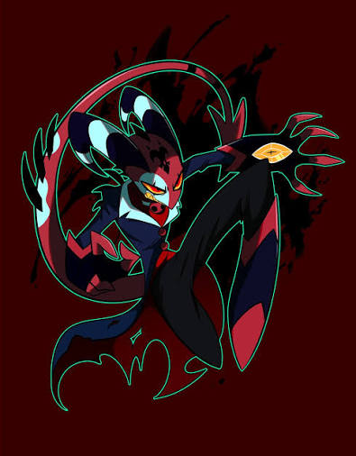

El Origen de Blitzø
Blitzø comenzó su carrera como un ambicioso intérprete en el circo, pero su gran espíritu emprendedor lo llevó a fundar su propia agencia de asesinos en el Infierno (I.M.P.). A pesar de su caos interno y actitud imprudente, demuestra una profunda lealtad hacia su equipo y su hija adaptativa, Loona.
